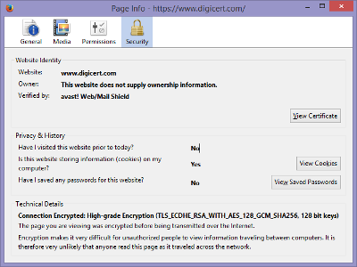
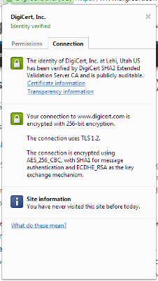
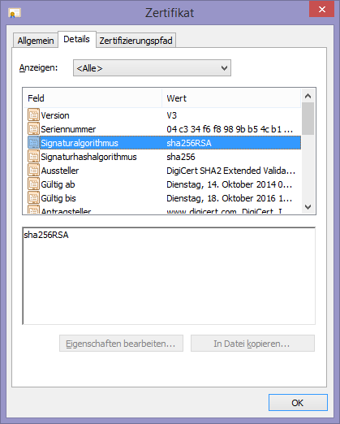
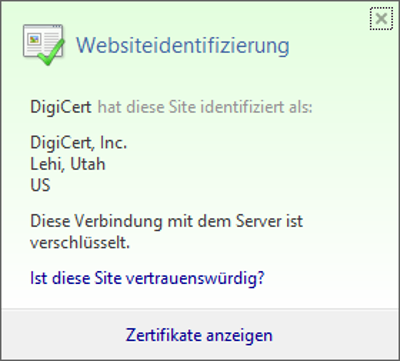

Geschichte
Die erste standartisierte Verschlüsselung im Internet war DES in den 1970er Jahren. DES (Data Encryption Standart) hat eine Schlüssellänge von 56-Bit. Anfand der 2000er wurde mit AES ein Nachfolger für DES eingeführt, da die Schlüssellänge von 56-bit als zu gering galt. Dies lag daran, dass ein Schlüssel der Länge 56-bit nur maximal 70,000,000,000,000,000 Kombinationen hat. Der neue AES-Standard hat Schlüssellängen zwischen 128-bit und 256-bit. Ein 128-bit Schlüssel hat 300,000,000,000,000,000,000,000,000,000,000,000 verschiedene Kombinationen. AES und DES sind beide symmetrische Verschlüsselungen, womit sie der strukturellen Schwachstelle unterliegen, dass der Encryption-Key und der Decryption-Key identisch sind. Die Schwachstelle ist der Schlüsselaustausch, bei dem der Client und der Server den Schlüssel übergeben. Hier kann ein Man-in-the-Middle-angriff (Der Angreifer fängt die Datenpakete ab, welche den Schlüssel übermitteln und liest den Schlüssel mit.) den Schlüssel abfangen und so die Nachricht lesen. Neuere Verschlüsselungen basieren deshalb auf einer asymmetrischen Verschlüsselung. Hierbei gibt es meist eine öffentliche Datenbank auf der die Public-Keys liegen. Ein Client kann so seine Botschaft mit dem Public-Key des Servers verschlüsseln, welcher diese mit seinem Private-Key entschlüsselt. Diese Form der Datenübertragung hat das Problem, dass die asymmetrische Verschlüsselung wesentlich langsamer ist als die symmetrische. Deswegen wird heutzutage meistens eine Kombination aus beiden benutzt.Beispiel:
Der Client baut eine Verbindung zum Server auf. Dabei generiert der Client einen zufälligen symmetrischen Schlüssel. Diesen verschlüsselt er dann mit dem Public-Key des Servers. Der Server entschlüsselt diesen Key mit seinem Private-Key. Für die Dauer der Übertragung verwenden Server und Client jetzt diesen zufallsgenerierten Schlüssel.
Verschlüsselungen innerhalb von Webbrowsern
Im Web gibt es viele verschiedene Verschlüsselungen. Manche sehr verbreitete sind aber schon als unsicher markiert. Deswegen ist es wichtig, zu erkennen, ob die Seite, auf der man gerade seine Kreditkartennummer eingibt, auch eine gute Verschlüsselung hat. Firefox
Durch einen Klick auf "More Information" öffnet sich ein neues Fenster. Hier wählt man den Security-Tab an.

Unter "Connection Encrypted" steht nun der Verschlüsselungs Typ. Hier wird die verschlüsselte Kommunikation über TLS durchgeführt, welches RSA als asymmetrische Verschlüsselung benutzt. Der symmetrische Schlüssel ist ein SHA256-Hash welcher mit AES-128 verschlüsselt ist.

Hier kann direkt abgelesen werden, dass die verschlüsselte Kommunikation über TLS durchgeführt, welches RSA als asymmetrische Verschlüsselung benutzt. Der symmetrische Schlüssel ist ein SHA1-Hash, welcher mit AES-256 verschlüsselt ist.

Hier kann direkt abgelesen werden, dass die verschlüsselte Kommunikation über TLS durchgeführt, welches RSA als asymmetrische Verschlüsselung benutzt. Der symmetrische Schlüssel ist ein SHA1-Hash, welcher mit AES-256 verschlüsselt ist.

Hier kann unter Signaturalgorithmus ausgelesen werden, dass der symmetrische Schlüssel ein SHA-256 Schlüssel. Die Kommunikation ist mit RSA verschlüsselt. Anders als bei anderen Browsern kann nicht ausgelesen werden, ob es sich um TLS als Kryptographieprotokoll handelt. Auch kann nicht festgestellt werden, ob AES zum Verschlüsseln des SHA-256-Hash benutzt wird.

Ein Klick auf "Zertifikat anzeigen" und dann im neuen Fenster auf "Details" öffnet folgendes Fenster:
Hier kann unter Signaturalgorithmus ausgelesen werden, dass der symmetrische Schlüssel ein SHA-256 Schlüssel. Die Kommunikation ist mit RSA verschlüsselt. Anders als bei anderen Browsern kann nicht ausgelesen werden, ob es sich um TLS als Kryptographieprotokoll handelt, auch kann nicht festgestellt werden, ob AES zum Verschlüsseln des SHA-256-Hash benutzt wird.
TLS
TLS ist ein Kryptographieprotokoll, um sichere Kommunikation über das Internet zu gewährleisten. Hierzu wird ein Session-Key erstellt, welcher die Daten symmetrisch verschlüsselt. Dieser wird vorher mit einem asymmetrischen Key verschlüsselt und vom Server an den Client gesendet. Der symmetrische Key hat die gleiche Struktur wie der asymmetrische und kann daher nicht von Angreifern als solcher erkannt werden. Ab TLS 1.1 wird der asymmetrische Key mit SHA-265 statt MD5/SHA-1 erstellt. Der Session-Key garantiert eine höhere Datenrate, da er einfacher zu ver- bzw. entschlüsseln ist. Damit der symmetrische Key noch stärker wird, ist in ihm die MAC-Adresse der Clients enthalten. So soll verhindert werden, dass jemand ihn abfängt und auf seinem PC benutzt. Auch wird die MAC-Adresse des Servers mit eingebaut, um zu verhindern, dass der Traffic auf einen falschen Server umgeleitet werden kann. Die Lebensdauer eines Session-Key endet, wenn der Nutzer alle Verbindungen mit dem Server schließt oder der Server automatisch die Verbindung beendet. Das TLS-Verfahren kommt in Browsern, E-Mail-Clients, IM-Programmen, VOIP und anderen zur A
SSL ist ein Protokoll zum Verschlüsseln von Datenverkehr vorallen bei Remote Shells. Es basiert auf einen Asymmetrischen Key. SSH speichert den Public Key von authorisierten Nutzer ab um u verhindern das jedes mal dass Password zum entschlüsseln des Private Keys eingegeben werden muss. Der Datenverkehr an sich ist mit TLS verschlüsselt. Im April 2014 wurde ein Bug in SSL gefunden der es ermöglichte durch einen Buffer Over-Read mehr als nur die verschlüsselte Botschaft vom Server zu bekommen, womit auf Private Key's gestohlen werden können. Dies hat zu Folge das nachrischten an diesen Server in Klarschrift gelesen werden können, bis dieser die Lücke behebt. Am 20 May 2014 waren 1,5% von den Top 800000 Alexa Seiten immernoch angreifbar . Die Lücke Selbst ist nur In OpenSSL vorhanden gewesen, weshalb ander Implementireungen wie GnuTLS sicher sind.
Verschlüsselungen innerhalb von E-Mail/IM Clients
Die PGP Verschlüsselung wurde in ihrer ersten Version 1991 von Phil Zimmermann entwickelt.
Da PGP ein Asymmetrisches Verschlüsslungsverfahren ist, benötigt der Empfänger der Nachricht einen Öffentlichen und einen Privaten Schlüssel.
Um Eine Mitteilung zu Verschlüsseln wird vom Sender ein zufälliger Schlüssel generiert, welcher mit dem Öffentlichen Schlüssel des Empfänger Verschlüsselt wird. Der hierdrauß generierte Schlüssel wird benutzt um die Nachricht zu verschlüsseln.
Der Sender sendet nun die Verschlüsselte Nachricht und den Verschlüsselten zufälligen Schlüssel an den Empfänger.
Der Empfänger entschlüsselt den Verschlüsselten Schlüssel mit seinen meist Password geschützten Privaten Schlüssel und generiert daraus den zufälligen Schlüssel des Senders.
Dieser Schlüssel ist Symmetrisch und kann verwendet werden um die Nachricht zu entschlüsseln.
Das Problem beim Senden solch einer Nachricht ist das der Empfänger nicht weiß ob die Identität des Senders stimmt. Deswegen kann die Nachricht auch Signiert werden. Beim Signieren wird ein Teil der Nachricht oder die Gesamte Nachricht mit einer Hashfunktion (z.b. SHA-256) zu einen sogenannten Fingerprint umgewandelt. Dieser wird nun mit dem Private Key des Sender verschlüsselt. Der Empfänger entschlüsselt die Signatur mit dem Public Key des Senders und kann dann den Fingerprint der Signatur mit den von ihn Selbst generierten Fingerprint der Nachricht vergleichen.
Für die E-Mail Programme Thunderbird und Outlook gibt es einen Erweiterung um PGP zu nutzten.
Ein Beispiel für die Verschlüsselung:
Die Nachricht:
PGP Testtext
Verschlüsselt und Unterschrieben:
-----BEGIN PGP MESSAGE-----
Charset: utf-8
Version: GnuPG v2.0.22 (MingW32)
Comment: Using GnuPG with Thunderbird - http://www.enigmail.net/
hQEMAx3hLWXSVt3sAQgAl8Nf1k/kUMVQYSyZjfAai0BFJje7w+ZvVxR2OrXmvbUs
wbKjWEI7zf6dF1cU0uteQa01lzXMXX0BfVt+1bgqdvCTU0Rv1BNfc+WC6xxcaKFx
Ty7ZwEx4NGWVP+bdEEiBuPxnsduI2iS7d9L7yM+UIx6wLo0peoR3PZbK60AnNHnd
OfAqC2JJ1vY7SXRpJ8/20epLyFYjWDdMfz1cl49lOLSgNvDhTzr1gfaFv/jUOAJn
5kv4bTRosn5FNMm8V4zEJDU9YX37P4Ao6yeoK0gMIPTRHXc3H+hvP84rcBLaaRfz
Qgm6GZP9TUaWbZyJ0l0tNUJzzFL+bVcU8BQ+orcMi4UBDAO/15sI8wFQngEIAL7f
iOedPLVaEVbY1Bhp6kWRKoXyYEe6irRPUJ4O/AbEDMxPiQdWRnAt0BQskaVtiRCX
b62l1uxjJrPczr1p6F84223FvgDkEF2EOGSzXyMSbgpxrTHmAGZK7AOW1qnmwNSU
/g7E4IoenYAIKPVj9VAbZG6Xhq3+6uNODwNDv0+EYakNC8UXrzdRU0otUvpKB8XN
eVWTfk4pPD8vEQ8Ad88z1F3AmxA3EBFBnEsWB1uxpR3uAjzyHeBPyNFlN9KrRavj
OQc67vBT1C+tyxOK3hoiITQ68lrZB5YNiOGV2tVsMpvBbnfIgnPzqgyM/3g/osbo
UeFdm+MkTyaRt2hFgazSwLoBB5w5BbNTJtyKoyFBLVOu+MtQLLY3oS0fTu6phf9s
8irNh6eWoqsmXE+og85TssvsHpgDxgFh/KdRzxzobEebKWgyVJ9f6HNs6vyrL+40
gfnr31Eclf4QwkSwALPkD3ujy6lYAHkXa65WTaJoftRNR3Iz+pPCwe1lWEji0VEA
oVruWNfj7id6GU6tLbO6ubZuNBt9823UwTw8j7t20V90o9F0hPMTLRA51DX+OdKM
I7UjBhnLYoQuAYVxgHZOlJGNZz4H1zzOhkdGO8zMvlaXifV1E+EBy4sWIbdtz8kJ
O6Dkmlu+NdG36V4t5J/W8vgyN4oLjXn1mBUwBkQHtNrTgrEN99AjwahH23ViRM3Y
/mPxfNqTboM30xPihDFZ0fx8DFipBCGZC7uR9ZSgkgRqPSTiFfWwRzidkAQSAl6Y
xrJwLPflTOCWQUPv7izgdZtyTS1WozEWi7EsFaUTVehlwfXvzc5rKk/lZEExHmpi
FSXcmYZuz4ZwM88=
=gzTf
-----END PGP MESSAGE-----
Nach dem Entschlüsseln wird in Thunderbird folgener Text angezeigt:
Entschlüsselte Nachricht; Korrekte Unterschrift von NamedesSenders Email@des.Senders
Schlüssel-ID: 0x68451C66 / Unterschrieben am: 19.01.2015 10:42
PGP Testtext
Der Empfänger kann außerdem Festlegen ob er dem Absender Vertraut.
Ein Schlüssel dem eine Große Anzahl von Nutzern vertrauen ist mit größerer Wahrscheinlichkeit ein Schlüssel welcher nicht gefälscht ist.
Quellen
Symantec: PGP, online Verfügbar unter: pgp.com, zuletzt geprüft am 20.01.2015Wikipedia: Web of Trust, online Verfügbar unter: wikipedia.org/wiki/Web_of_trust, zuletzt geprüft am 20.01.2015
GnuPGP: Manual/x135, online Verfügbar unter: gnupgp.org/pgh/en/manual/x135.html, zuletzt geprüft am 20.01.2015
PGP International, online Verfügbar unter: pgpi.org/doc/pgpintro, zuletzt geprüft am 20.01.2015
Internet Engineering Task Force: TLS, online Verfügbar unter: tools.ietf.org/html/rfc5246, zuletzt geprüft am 20.01.2015
Heartbleed.com, online Verfügbar unter: heartbleed.com, zuletzt geprüft am 20.01.2015
Digicert: SSL, online Verfügbar unter: digicert.com/ssl.htm, zuletzt geprüft am 20.01.2015
Wikipedia: SSL, online Verfügbar unter: wikipedia.org/wiki/Secure_Shell, zuletzt geprüft am 20.01.2015
Spiegel.de: Inside the NSA's war on Internet Security, online Verfügbar unter: spiegel.de/international/germany/inside-the-nsa-s-war-on-internet-security-a-1010361.html, zuletzt geprüft am 20.01.2015
Google.de: Startseite, online Verfügbar unter: google.de, zuletzt geprüft am 20.01.2015
Paypal: Startseite, online Verfügbar unter: paypal.com, zuletzt geprüft am 20.01.2015
Wikipedia: AES, online Verfügbar unter: wikipedia.org/wiki/Advanced_Encryption_Standart, zuletzt geprüft am 21.01.2015
CES COMMUNICATIONS LTD: Encryption FAQ, online Verfügbar unter: cescomm.co.nz/about/encryption.html, zuletzt geprüft am 21.01.2015
Howstuffworks.com: Encryption, online Verfügbar unter: computer.howstuffworks.com/encryption.htm, zuletzt geprüft am 21.01.2015
google.com: Oswald, online Verfügbar unter: google.com/fonts/specimen/Oswald, zuletzt geprüft am 21.01.2015